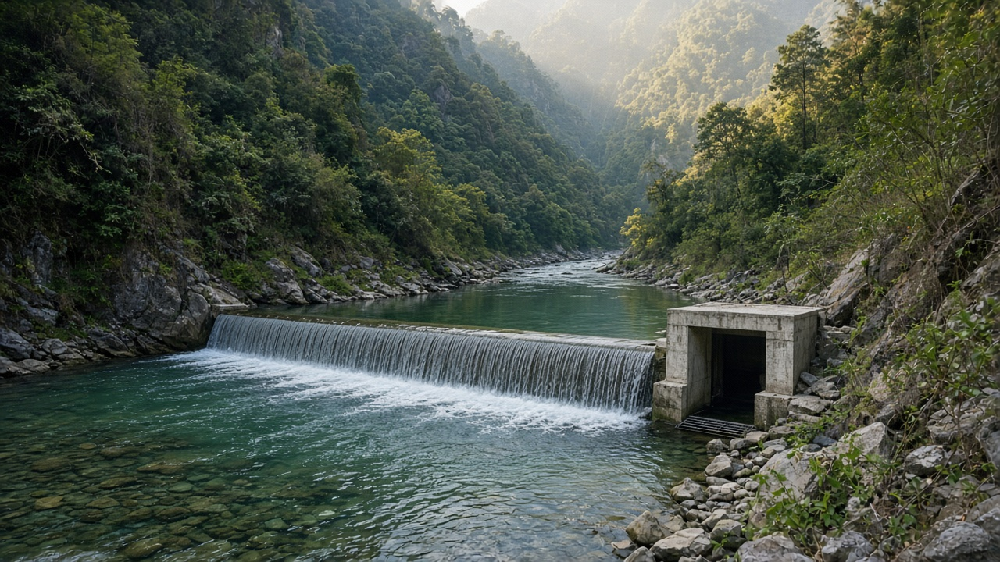
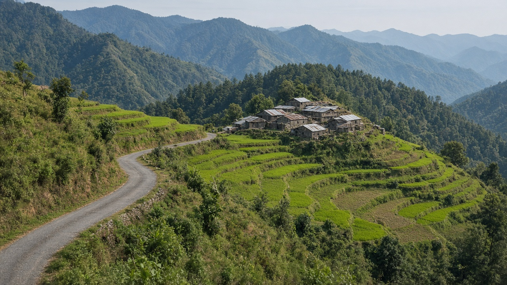
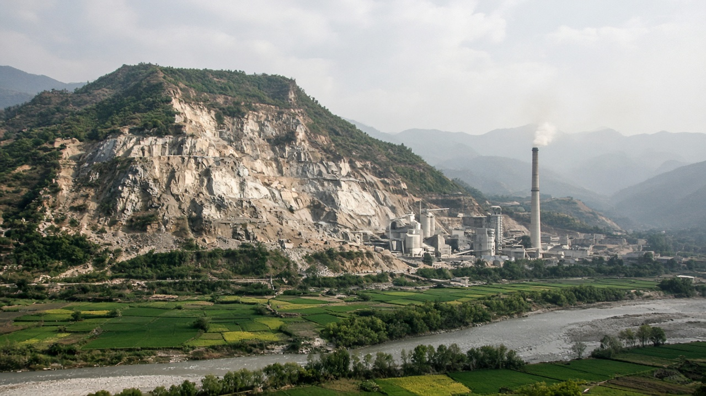

Environmental Policy and Economics in Nepal
Published on August 20, 2026

Nepal's environmental policy sits in the constitution's right to a clean and healthy environment, the Environment Protection Act and rules, sector laws on water, industry, and local government, and planning documents that set climate and development targets. Federalism split functions across union, province, and local levels, so the same quarry or hotel may face overlapping or missing permits. Economic instruments remain thinner than licensing: pollution charges, environmental funds, and fiscal transfers are written in law more often than they are collected at a rate that changes behavior. Hydropower, roads, cement, brick kilns, urban waste, and tourism are the sectors where policy meets the landscape every season.
Public finance shapes outcomes as much as environment circulars. Fuel and electricity pricing, fertilizer support, and capital spending on roads and rivers determine emissions, land conversion, and disaster exposure. Impact assessment and initial examinations are the main project filter, but post-approval supervision is uneven outside high-profile sites. Local user groups and municipalities are economic institutions as well as social ones: they allocate resource rents, labor, and dumping sites. Climate commitments create a demand for investment plans that ministries of finance can score, not only for narrative reports prepared for conferences.
A Nepal-focused economics agenda would expand measured pollution charges, publish the fiscal cost of harmful subsidies, strengthen provincial review capacity, and use intergovernmental transfers that reward local environmental performance. Valuation of water regulation, soils, and disaster risk should enter project appraisal for infrastructure. Officials who can read a municipal budget, an EIA condition, and a customs fuel duty together will see the real policy mix. The country's comparative advantage in water and landscapes is an asset account; policy quality decides whether that account is drawn down or maintained for the next generation.

नेपालको वातावरण नीति संविधानको स्वच्छ र स्वस्थ वातावरणको हक, वातावरण संरक्षण ऐन र नियम, पानी, उद्योग र स्थानीय सरकारका क्षेत्रगत कानुन, र जलवायु तथा विकास लक्ष्य राख्ने योजना कागजातमा बस्छ। सङ्घीयताले कार्य सङ्घ, प्रदेश र स्थानीय तहमा बाँड्यो, त्यसैले एउटै खानी वा होटलले दोहोरिएका वा हराएका अनुमति भोग्न सक्छ। आर्थिक औजार इजाजतभन्दा पातला छन्: प्रदूषण शुल्क, वातावरण कोष र राजस्व हस्तान्तरण व्यवहार बदल्ने दरमा संकलन हुनुभन्दा कानुनमा लेखिने बढी हुन्छ। जलविद्युत्, सडक, सिमेन्ट, इँटा भट्टा, सहरी फोहोर र पर्यटन ती क्षेत्र हुन् जहाँ नीति हरेक याम परिदृश्यसँग भेट्छ।
सार्वजनिक वित्तले वातावरण परिपत्र जत्तिकै नतिजा आकार दिन्छ। इन्धन र बिजुली मूल्य, मल सहयोग, र सडक तथा नदीमा पूँजी खर्चले उत्सर्जन, भूमि रूपान्तरण र विपद् जोखिम तय गर्छन्। प्रभाव मूल्याङ्कन र प्रारम्भिक परीक्षण मुख्य आयोजना छननी हुन्, तर स्वीकृतिपछिको निगरानी चर्चित स्थलबाहेक असमान छ। स्थानीय उपभोक्ता समूह र नगरपालिका सामाजिक मात्र होइन आर्थिक संस्था हुन्: स्रोत भाडा, श्रम र फाल्ने स्थल बाँड्छन्। जलवायु प्रतिबद्धताले अर्थ मन्त्रालयले अङ्क दिन सक्ने लगानी योजना माग्छ, सम्मेलनका लागि तयार कथा प्रतिवेदन मात्र होइन।
नेपाल केन्द्रित अर्थशास्त्र कार्यसूचीले नापिएका प्रदूषण शुल्क फैलाउने, हानिकारक अनुदानको राजस्व लागत प्रकाशित गर्ने, प्रदेश समीक्षा क्षमता बलियो पार्ने र स्थानीय वातावरण कार्यसम्पादन पुरस्कृत गर्ने अन्तर-सरकारी हस्तान्तरण प्रयोग गर्नेछ। पानी नियमन, माटो र विपद् जोखिमको मूल्यांकन पूर्वाधार आयोजना मूल्याङ्कनमा छिर्नुपर्छ। नगर बजेट, EIA अर्थात् वातावरणीय प्रभाव मूल्याङ्कन सर्त र भन्सार इन्धन महसुल सँगै पढ्न सक्ने अधिकारीले वास्तविक नीति मिश्रण देख्छन्। पानी र परिदृश्यमा तुलनात्मक लाभ सम्पत्ति खाता हो; नीति गुणस्तरले त्यो खाता खिचिन्छ कि अर्को पुस्ताका लागि राखिन्छ भन्ने तय गर्छ।

नेपाल की पर्यावरण नीति संविधान के स्वच्छ और स्वस्थ पर्यावरण के अधिकार, पर्यावरण संरक्षण अधिनियम और नियम, जल, उद्योग और स्थानीय सरकार के क्षेत्र कानून, तथा जलवायु और विकास लक्ष्य रखने वाले योजना पत्रों में बैठती है। संघवाद ने कार्य संघ, प्रदेश और स्थानीय स्तरों में बाँटे, इसलिए एक ही खदान या होटल दोहरी या गायब अनुमति झेल सकता है। आर्थिक उपकरण लाइसेंस से पतले हैं: प्रदूषण शुल्क, पर्यावरण कोष और राजकोषीय अंतरण व्यवहार बदलने वाली दर पर वसूली से अधिक कानून में लिखे जाते हैं। जलविद्युत्, सड़क, सीमेंट, ईंट भट्ठा, शहरी कचरा और पर्यटन वे क्षेत्र हैं जहाँ नीति हर मौसम परिदृश्य से मिलती है।
सार्वजनिक वित्त पर्यावरण परिपत्र जितना ही परिणाम गढ़ता है। ईंधन और बिजली मूल्य, उर्वरक सहयोग, और सड़क तथा नदियों पर पूँजी खर्च उत्सर्जन, भूमि रूपांतरण और आपदा जोखिम तय करते हैं। प्रभाव मूल्यांकन और प्रारंभिक जाँच मुख्य परियोजना छँटाई हैं, पर स्वीकृति के बाद निगरानी चर्चित स्थलों के बाहर असमान है। स्थानीय उपभोक्ता समूह और नगरपालिकाएँ केवल सामाजिक नहीं आर्थिक संस्थाएँ हैं: संसाधन भाड़ा, श्रम और फेंक स्थल बाँटती हैं। जलवायु प्रतिबद्धताएँ वित्त मंत्रालय अंक दे सके ऐसी निवेश योजनाएँ माँगती हैं, सम्मेलनों के लिए तैयार कथा प्रतिवेदन मात्र नहीं।
नेपाल केंद्रित अर्थशास्त्र कार्यसूची नापे प्रदूषण शुल्क फैलाएगा, हानिकारक अनुदान की राजकोषीय लागत प्रकाशित करेगा, प्रांतीय समीक्षा क्षमता मज़बूत करेगा और स्थानीय पर्यावरण प्रदर्शन पुरस्कृत करने वाले अंतर-सरकारी अंतरण प्रयोग करेगा। जल नियमन, मिट्टी और आपदा जोखिम का मूल्यांकन अवसंरचना परियोजना मूल्यांकन में घुसना चाहिए। नगर बजट, EIA अर्थात् पर्यावरणीय प्रभाव मूल्यांकन शर्त और सीमा शुल्क ईंधन कर साथ पढ़ सकने वाले अधिकारी वास्तविक नीति मिश्रण देखते हैं। जल और परिदृश्य में तुलनात्मक लाभ परिसंपत्ति खाता है; नीति गुणवत्ता तय करती है वह खाता खिंचता है या अगली पीढ़ी के लिए रखा जाता है।